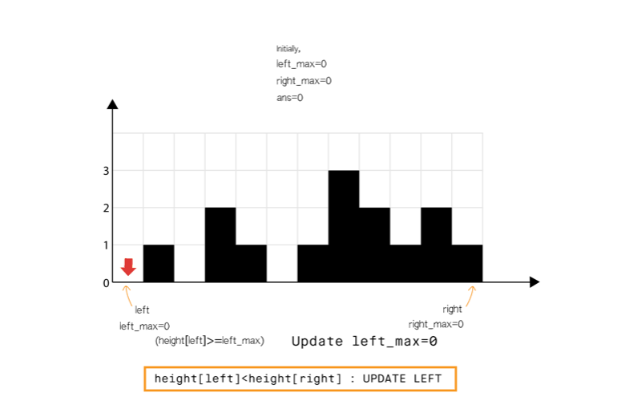

题目0042:接雨水
题目描述
给定n个非负整数表示每个宽度为1的柱子的高度图,计算按此排列的柱子,下雨之后能接多少雨水。

上面是由数组[0,1,0,2,1,0,1,3,2,1,2,1]表示的高度图,在这种情况下,可以接6个单位的雨水(蓝色部分表示雨水)。
示例:
输入: [0,1,0,2,1,0,1,3,2,1,2,1]
输出: 6
解题技巧
- 方法1:暴力
直观想法:直接按问题描述进行。对于数组中的每个元素,我们找出下雨后水能达到的最高位置,等于两边最大高度的较小值减去当前高度的值。
算法
- 初始化ans=0
- 从左向右扫描数组:
- 初始化\text{max\_left}=0和\text{max\_right}=0
- 从当前元素向左扫描并更新:\text{max\_left}=\max(\text{max\_left},\text{height}[j])
- 从当前元素向右扫描并更新:\text{max\_right}=\max(\text{max\_right},\text{height}[j])
- 将\min(\text{max\_left},\text{max\_right}) - \text{height}[i]累加到\text{ans}
int trap(vector<int>& height)
{
int ans = 0;
int size = height.size();
for (int i = 1; i < size - 1; i++) {
int max_left = 0, max_right = 0;
for (int j = i; j >= 0; j--) { //Search the left part for max bar size
max_left = max(max_left, height[j]);
}
for (int j = i; j < size; j++) { //Search the right part for max bar size
max_right = max(max_right, height[j]);
}
ans += min(max_left, max_right) - height[i];
}
return ans;
}
复杂性分析
时间复杂度:O(n^2)。数组中的每个元素都需要向左向右扫描。
空间复杂度:O(1)的额外空间。
- 方法2:动态编程
直观想法:在暴力方法中,我们仅仅为了找到最大值每次都要向左和向右扫描一次。但是我们可以提前存储这个值。因此,可以通过动态编程解决。
这个概念可以见下图解释：

算法
- 找到数组中从下标i到最左端最高的条形块高度\text{left\_max}。
- 找到数组中从下标i到最右端最高的条形块高度\text{right\_max}
- 扫描数组\text{height}并更新答案：
- 累加\min(\text{max\_left}[i],\text{max\_right}[i]) - \text{height}[i]到ans上
int trap(vector<int>& height)
{
if(height == null)
return 0;
int ans = 0;
int size = height.size();
vector<int> left_max(size), right_max(size);
left_max[0] = height[0];
for (int i = 1; i < size; i++) {
left_max[i] = max(height[i], left_max[i - 1]);
}
right_max[size - 1] = height[size - 1];
for (int i = size - 2; i >= 0; i--) {
right_max[i] = max(height[i], right_max[i + 1]);
}
for (int i = 1; i < size - 1; i++) {
ans += min(left_max[i], right_max[i]) - height[i];
}
return ans;
}
复杂性分析
时间复杂度:O(n)。存储最大高度数组,需要两次遍历,每次O(n)。最终使用存储的数据更新ans,O(n)。
空间复杂度:O(n)额外空间。
和方法1相比使用了额外的O(n)空间用来放置\text{left\_max}和\text{right\_max}数组。
- 方法3:栈的应用
直观想法:我们可以不用像方法2那样存储最大高度,而是用栈来跟踪可能储水的最长的条形块。使用栈就可以在一次遍历内完成计算。
我们在遍历数组时维护一个栈。如果当前的条形块小于或等于栈顶的条形块,我们将条形块的索引入栈,意思是当前的条形块被栈中的前一个条形块界定。如果我们发现一个条形块长于栈顶,我们可以确定栈顶的条形块被当前条形块和栈的前一个条形块界定,因此我们可以弹出栈顶元素并且累加答案到\text{ans}。
算法
- 使用栈来存储条形块的索引下标。
- 遍历数组：
- 当栈非空且\text{height}[current]>\text{height}[st.top()]
- 意味着栈中元素可以被弹出。弹出栈顶元素\text{top}。
- 计算当前元素和栈顶元素的距离,准备进行填充操作:\text{distance} = \text{current} - \text{st.top}() - 1
- 找出界定高度:\text{bounded\_height} = \min(\text{height[current]}, \text{height[st.top()]}) - \text{height[top]}
- 往答案中累加积水量\text{ans} \mathrel{+}= \text{distance} \times \text{bounded\_height}
- 将当前索引下标入栈
- 将\text{current}移动到下个位置
int trap(vector<int>& height)
{
int ans = 0, current = 0;
stack<int> st;
while (current < height.size()) {
while (!st.empty() && height[current] > height[st.top()]) {
int top = st.top();
st.pop();
if (st.empty())
break;
int distance = current - st.top() - 1;
int bounded_height = min(height[current], height[st.top()]) - height[top];
ans += distance * bounded_height;
}
st.push(current++);
}
return ans;
}
复杂性分析
时间复杂度:O(n)。单次遍历O(n),每个条形块最多访问两次(由于栈的弹入和弹出),并且弹入和弹出栈都是O(1)的。
空间复杂度:O(n)。栈最多在阶梯型或平坦型条形块结构中占用O(n)的空间。
- 方法4:使用双指针
直观想法:和方法2相比,我们不从左和从右分开计算,我们想办法一次完成遍历。从动态编程方法的示意图中我们注意到,只要\text{right\_max}[i]>\text{left\_max}[i](元素0到元素6),积水高度将由left_max决定,类似地\text{left\_max}[i]>\text{right\_max}[i](元素8到元素11)。所以我们可以认为如果一端有更高的条形块(例如右端),积水的高度依赖于当前方向的高度(从左到右)。当我们发现另一侧(右侧)的条形块高度不是最高的,我们则开始从相反的方向遍历(从右到左)。我们必须在遍历时维护\text{left\_max}和\text{right\_max},但是我们现在可以使用两个指针交替进行,实现1次遍历即可完成。
算法
- 初始化\text{left}指针为0并且\text{right}指针为size-1
- While \text{left}< \text{right}, do:
- If \text{height[left]} < \text{height[right]}
- If \text{height[left]} \geq \text{left\_max},更新\text{left\_max}
- Else 累加\text{left\_max}-\text{height[left]}到\text{ans}
- \text{left} = \text{left} + 1.
- Else
- If \text{height[right]} \geq \text{right\_max},更新\text{right\_max}
- Else 累加\text{right\_max}-\text{height[right]}到\text{ans}
- \text{right} = \text{right} - 1.

int trap(vector<int>& height)
{
int left = 0, right = height.size() - 1;
int ans = 0;
int left_max = 0, right_max = 0;
while (left < right) {
if (height[left] < height[right]) {
height[left] >= left_max ? (left_max = height[left]) : ans += (left_max - height[left]);
++left;
}
else {
height[right] >= right_max ? (right_max = height[right]) : ans += (right_max - height[right]);
--right;
}
}
return ans;
}
复杂性分析
时间复杂度:O(n)。单次遍历的时间O(n)。
空间复杂度:O(1)的额外空间。left,right,left_max和right_max只需要常数的空间。